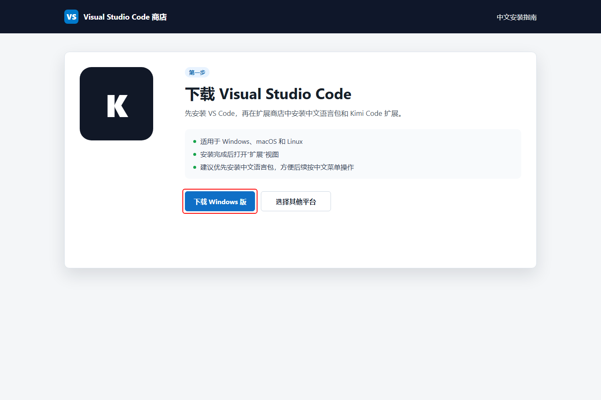
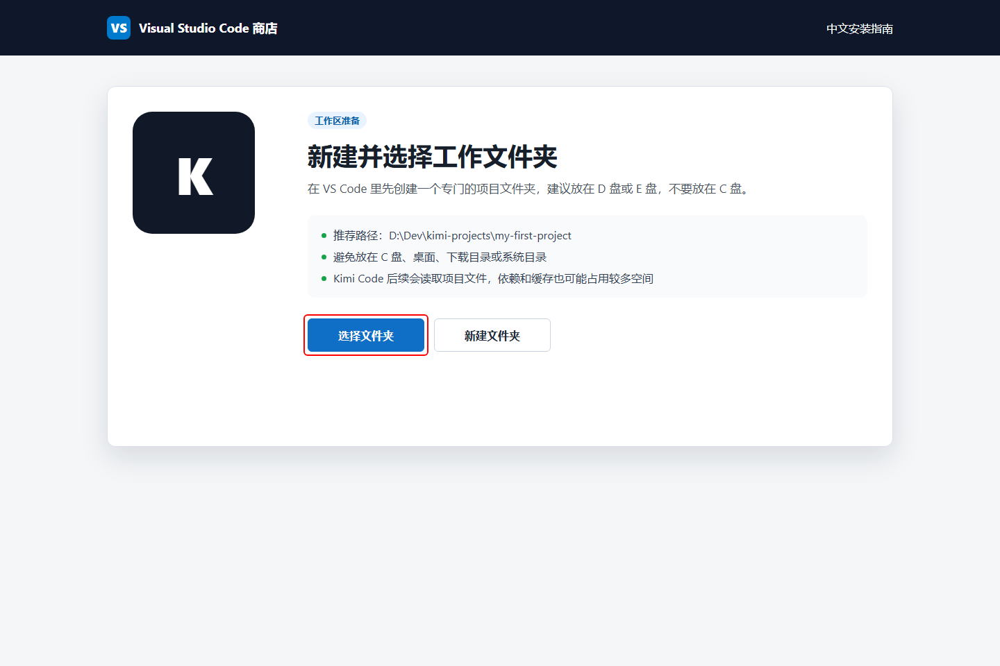
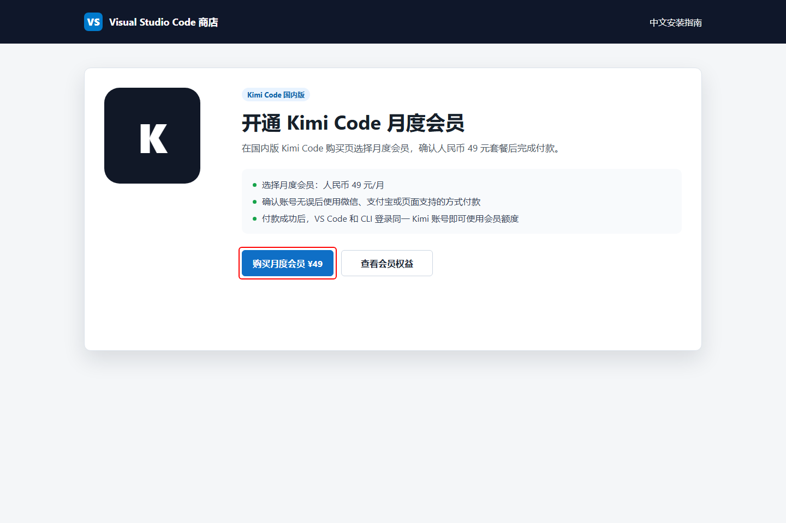
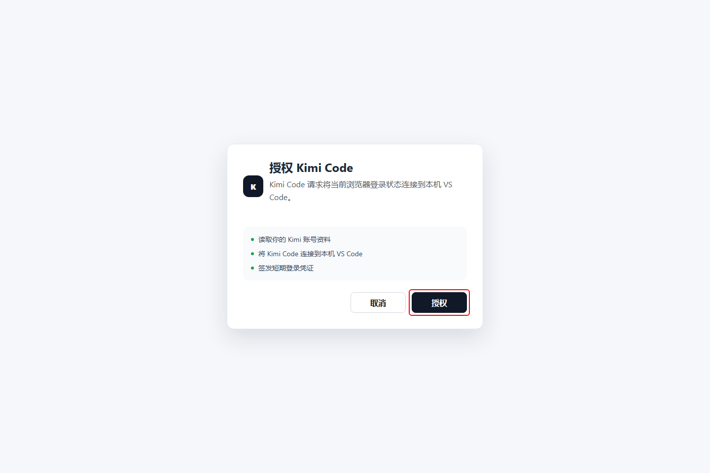

Kimi Code 国内版
VS Code 与 CLI 安装配置教程
从零开始 · 先装 VS Code · 图文并茂
中文语言包 / Kimi Code 扩展 / 会员登录 / CLI 完整指南
生成日期：2026年4月21日
目录
- Kimi Code 是什么
- 先安装 VS Code、扩展与会员
- Windows 安装详解
- macOS 安装详解
- VS Code 端使用技巧
- 快速上手指南
1. Kimi Code 是什么
Kimi Code 是由月之暗面（Moonshot AI）推出的 AI 编程助手能力，国内版可以通过 VS Code 扩展和命令行 CLI 两种方式使用。它能够：
- 阅读和编辑代码：自动分析项目结构，实现新功能、修复 Bug、重构代码
- 执行 Shell 命令：在你授权后运行构建、测试、批量处理等操作
- 搜索与抓取网页：获取最新文档、API 参考、技术资料
- 自主规划行动：根据任务目标自动拆解步骤并执行
它支持三种使用方式：
| 方式 | 命令 | 适用场景 |
|---|
| 交互式命令行 | kimi | 日常开发、快速问答、代码修改 |
| 浏览器界面 | kimi web | 需要图形界面、会话管理、代码高亮 |
| Agent 服务 | kimi acp | 集成到 IDE（如 VS Code、Cursor）中 |
2. 先安装 VS Code、扩展与会员
2.1 系统要求
| 项目 | 最低要求 | 推荐配置 |
|---|
| 操作系统 | Windows 10 / macOS 11 / Ubuntu 20.04 | Windows 11 / macOS 14 / Ubuntu 22.04+ |
| VS Code | 建议先安装最新版 Visual Studio Code，再安装中文语言包与 Kimi Code 扩展 |
| Kimi 账号 | 需要一个国内版 Kimi / Moonshot AI 账号，并使用同一账号开通会员与登录扩展 |
| Python 版本 | Python 3.12 | Python 3.13（CLI 方式最佳兼容性） |
| 网络 | 能访问 https://code.kimi.com、VS Code Marketplace 和 PyPI |
| 磁盘空间 | 500 MB | 1 GB 以上（含缓存） |
| 内存 | 2 GB | 4 GB 以上 |
2.2 第一步：下载并安装 VS Code
先打开 VS Code 官网下载页面，选择与你电脑系统匹配的安装包。Windows 用户一般选择 Windows 版安装器，安装完成后直接启动 VS Code。

图 2.2：先下载并安装 VS Code
2.3 第二步：在 VS Code 商城安装中文语言包
打开 VS Code 后，先安装中文语言包，后续所有菜单和扩展操作会更容易跟着做。
- 点击左侧活动栏的扩展图标，或按 Ctrl + Shift + X。
- 搜索 Chinese (Simplified) Language Pack 或 中文（简体）语言包。
- 选择发布者为 MS-CEINTL 的中文语言包，点击安装。
- 安装完成后，如果 VS Code 提示重启或重新加载窗口，点击确认。
图 2.3：在 VS Code 商城安装中文（简体）语言包
2.4 第三步：在 VS Code 商城安装 Kimi Code 扩展
中文界面准备好后，在同一个 VS Code 扩展商城里安装 Kimi Code。
- 仍然停留在 VS Code 的扩展视图。
- 搜索 Kimi Code。
- 选择官方发布者 moonshot-ai 的 Kimi Code 扩展。
- 点击安装，安装完成后建议重新加载 VS Code。
图 2.4：在 VS Code 商城安装 Kimi Code 扩展
2.5 第四步：新建并选择工作文件夹（不要放 C 盘）
安装 Kimi Code 扩展后，先给后续项目准备一个专门的工作文件夹。不要直接把项目放在 C 盘、桌面、下载目录或系统目录里。Kimi Code 后续会读取项目文件，项目依赖、缓存、日志也可能越来越大，放在系统盘容易占满空间或让电脑变卡。
- 在 D 盘或 E 盘新建一个总目录，例如 D:\Dev\kimi-projects。
- 在这个目录下为每个项目再建一个独立文件夹，例如 D:\Dev\kimi-projects\my-first-project。
- 回到 VS Code，点击菜单 文件 → 打开文件夹，选择刚刚新建的项目文件夹。
- 确认 VS Code 左侧资源管理器显示的是这个 D 盘/E 盘项目目录，再开始使用 Kimi Code。

图 2.5：在 VS Code 中选择 D 盘或 E 盘的项目工作文件夹
不要放 C 盘：尤其不要选择 C:\Windows、C:\Program Files、桌面、下载目录这类位置。推荐固定使用 D:\Dev、D:\Projects 或 E:\Projects 这类数据盘目录。
2.6 第五步：开通 Kimi Code 月度会员
Kimi Code 国内版需要可用的 Kimi 会员权益。进入 Kimi Code 国内版购买页，登录你的 Kimi 账号，选择月度会员并确认人民币 49 元/月 的套餐，然后使用页面支持的付款方式完成支付。
- 打开 https://www.kimi.com/code/zh 或 Kimi Code 购买入口。
- 登录你准备用于 VS Code 的同一个 Kimi 账号。
- 选择 Kimi Code 可用的月度会员，确认价格为 ¥49/月。
- 使用微信、支付宝或页面支持的方式付款。
- 付款完成后，不要切换账号；后续 VS Code 端登录必须使用这个已开通会员的账号。

图 2.6：购买 Kimi Code 国内版 49 元月度会员
注意：会员档位、价格和付款方式可能随活动变化，请以 Kimi 购买页最终展示为准。这里按当前国内购买入口的 49 元月度会员流程说明。
2.7 第六步：在 VS Code 端登录 Kimi Code 会员账号
安装扩展并开通会员后，需要在 VS Code 里登录同一个 Kimi 账号，Kimi Code 扩展才能识别你的会员权益。
- 在 VS Code 中打开第 2.5 节创建的 D 盘/E 盘项目文件夹。
- 点击左侧活动栏里的 Kimi 图标；如果没有看到图标，可以按 Ctrl + Shift + P 打开命令面板，搜索 Kimi Code 并打开面板。
- 在 Kimi Code 面板中点击登录或 Sign in。
- 浏览器会自动打开 Kimi 授权页，确认是刚刚购买 49 元月度会员的账号，然后点击授权。
- 授权完成后回到 VS Code，等待 Kimi Code 面板显示已登录状态，再发送一个简单问题测试是否可用。

图 2.7：VS Code 端登录会员账号时，在浏览器中点击“授权”
提示：如果 VS Code 里仍提示未开通或额度不可用，优先检查两个地方：付款账号和 VS Code 登录账号是否一致；扩展是否安装的是官方 moonshot-ai.kimi-code。必要时退出登录后重新登录。
2.8 后续命令行安装还需要什么
- 终端/命令行工具（Windows 用 PowerShell，macOS/Linux 用 Terminal）
- CLI 方式需要安装 kimi-cli；如果你只在 VS Code 里使用，可以先跳过第 3～7 章的命令行安装。
注意：后续 CLI 安装脚本会自动下载并安装 uv（Python 包管理工具）。如果你的系统已经安装了 uv，脚本会跳过这一步。uv 会被安装到用户目录下，不会污染系统全局 Python 环境。
3. Windows 安装详解
3.1 打开 PowerShell
在 Windows 上，Kimi Code CLI 的安装通过 PowerShell 完成。
1
按下 Win + X，在弹出的菜单中选择 "终端(管理员)" 或 "Windows PowerShell"。
如果没有管理员权限，普通用户模式也可以安装，只是 uv 会安装到用户目录。
2
在 PowerShell 窗口中，复制并粘贴以下命令，然后按 Enter 执行：
Invoke-RestMethod https://code.kimi.com/install.ps1 | Invoke-Expression
3.2 安装过程详解
执行上述命令后，脚本会依次完成以下操作：
- 下载安装脚本：从 https://code.kimi.com/install.ps1 获取 PowerShell 安装脚本
- 检查 uv：如果系统中没有 uv，脚本会自动下载并安装到 %USERPROFILE%\.local\bin 或 %LOCALAPPDATA%\uv
- 安装 Kimi CLI：通过 uv 创建独立的 Python 环境，并安装 kimi-cli 包
- 添加环境变量：将 uv 和 kimi 的可执行文件路径添加到用户 PATH 中
提示：如果 PowerShell 提示"无法加载脚本，因为在此系统上禁止运行脚本"，请先用以下命令调整执行策略（仅限当前用户）：
Set-ExecutionPolicy -ExecutionPolicy RemoteSigned -Scope CurrentUser
3.3 安装完成后的检查
安装完成后，重新打开一个 PowerShell 窗口（让环境变量生效），运行：
kimi --version
如果看到版本号输出（例如 kimi 1.x.x），说明安装成功。
4. macOS 安装详解
4.1 打开终端
在 macOS 上，你可以通过以下任一方式打开终端：
- 按 Cmd + 空格 打开 Spotlight，输入 Terminal 回车
- 在"启动台"中找到"终端"应用
- 在 VS Code 中按 Ctrl + ` 打开内置终端
4.2 执行安装命令
在终端中复制并粘贴以下命令，按 Enter 执行：
curl -LsSf https://code.kimi.com/install.sh | bash
4.3 安装过程详解
- 下载脚本：curl 从远程获取安装脚本
- 检测平台：脚本会自动识别 macOS 的架构（Intel 或 Apple Silicon）
- 安装 uv：如果没有 uv，会下载对应架构的 uv 二进制文件到 ~/.local/bin
- 安装 kimi-cli：通过 uv 安装到独立的工具环境中
- 配置 PATH：修改 ~/.bashrc、~/.zshrc 或 ~/.config/fish/config.fish 等配置文件
macOS 安全提示：由于 macOS 的安全检查机制，首次运行 kimi 命令可能需要较长时间（系统在验证应用）。你可以在系统设置 → 隐私与安全性 → 开发者工具中添加你的终端应用（如 Terminal、iTerm2、VS Code），以加速后续启动。
4.4 验证安装
安装完成后，新开一个终端窗口或运行 source ~/.zshrc（如果你用 zsh），然后执行：
kimi --version
5. VS Code 端使用技巧
安装并登录 Kimi Code 扩展后，日常开发主要在 VS Code 的 Kimi 面板里完成。下面几个技巧最常用，建议先掌握。
图 5.1：VS Code 端常用输入技巧：@ 文件、/ 命令、截图输入
5.1 用 @ 精准引用文件、文件夹和代码行
在 Kimi Code 输入框里输入 @，然后选择你要让 Kimi 阅读的文件或文件夹。这样比笼统地说“看看我的代码”更准确，也能减少误读。
常见写法：
| 写法 | 作用 |
|---|
| @src/app.ts | 引用单个文件 |
| @src/handlers/ | 引用整个文件夹 |
| @src/app.ts:10-20 | 只引用某个文件的第 10 到 20 行 |
如果你正在编辑某个文件，也可以按 Alt+K，快速把当前文件或选中的代码插入为引用。
5.2 用 / 打开命令菜单和计划模式
在输入框里输入 / 可以打开 Kimi Code 的命令菜单。常见命令包括：
| 命令 | 作用 |
|---|
| /init | 扫描当前项目并生成项目说明文档 |
| /compact | 当上下文太长时压缩上下文 |
| /plan | 如果当前版本显示该命令，可进入计划模式，先看步骤再执行 |
如果你的版本没有显示 /plan，可以点击输入框左侧或附近的“计划模式”图标。开启后，Kimi 会先给出执行计划，你确认方向没问题后再让它继续动手，适合重构、批量修改、排查复杂问题。
5.3 发截图给 Kimi 分析界面问题
Kimi Code 支持把图片作为输入。遇到报错弹窗、插件界面异常、网页样式错位时，可以直接截图发给它分析。
常用方式：
- Windows 可以按 Win + Shift + S 截图；macOS 可以按 Cmd + Shift + 4 截图。
- 回到 VS Code 的 Kimi 输入框，直接粘贴截图。
- 也可以把图片拖进输入框，或点击输入框旁边的 + 添加图片。
- 发送时把问题说清楚，例如：“帮我看这张截图里为什么登录失败，该点哪里？”
提示：截图里如果有手机号、邮箱、订单号、API Key 等敏感信息，先打码再发送。
5.4 让 Kimi 改代码前先看 diff
Kimi Code 在 VS Code 里修改文件后，会通过 diff 视图展示变更。建议每次都先看一遍改动，再决定保留或回退。
- 小改动：可以直接查看 diff 后保留。
- 多文件改动：先让 Kimi 解释每个文件为什么改，再逐个确认。
- 不确定的改动：不要急着接受，可以让 Kimi 重新规划或缩小范围。
5.5 常用快捷键
| 快捷键 | 作用 |
|---|
| Ctrl+Shift+K / Cmd+Shift+K | 聚焦 Kimi 输入框 |
| Alt+K | 插入当前文件或选中代码作为引用 |
| ↑ / ↓ | 在输入框中浏览历史消息 |
6. 快速上手指南
6.1 常用斜杠命令
在 Kimi Code CLI 的交互界面中，以 / 开头的命令称为"斜杠命令"：
| 命令 | 作用 |
|---|
| /help | 查看所有可用命令和快捷键 |
| /login | 配置或切换 API 平台账号 |
| /init | 为当前项目生成 AGENTS.md |
| /clear | 清空当前会话的上下文 |
| /exit | 退出 Kimi Code CLI |
6.2 常用 CLI 参数
| 参数 | 作用 |
|---|
| kimi --version | 查看版本 |
| kimi web | 在浏览器中打开图形界面 |
| kimi acp | 启动 Agent Client Protocol 服务 |
| kimi -v | 启用详细日志模式 |
6.3 最佳实践
- 在项目目录中启动：始终在你要工作的项目根目录运行 kimi，这样 AI 才能正确分析代码库
- 维护 AGENTS.md：大型项目或团队项目务必维护好 AGENTS.md，它决定了 AI 对项目的理解深度
- 及时清理上下文：长时间会话后，如果 AI 出现"健忘"，用 /clear 清空上下文重新开始
- 善用浏览器界面：对于需要查看大量代码、多文件对比的场景，kimi web 的体验比终端更好
恭喜！到这里，你已经完成了 Kimi Code CLI 的安装、配置和入门。现在可以开始享受终端 AI 带来的高效开发体验了！
© 2026 Alex Zheng · alexzheng-unzen.github.io · redacted copy, not for redistribution